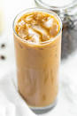
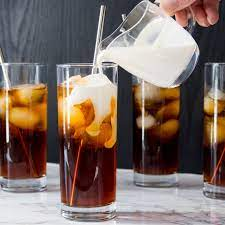
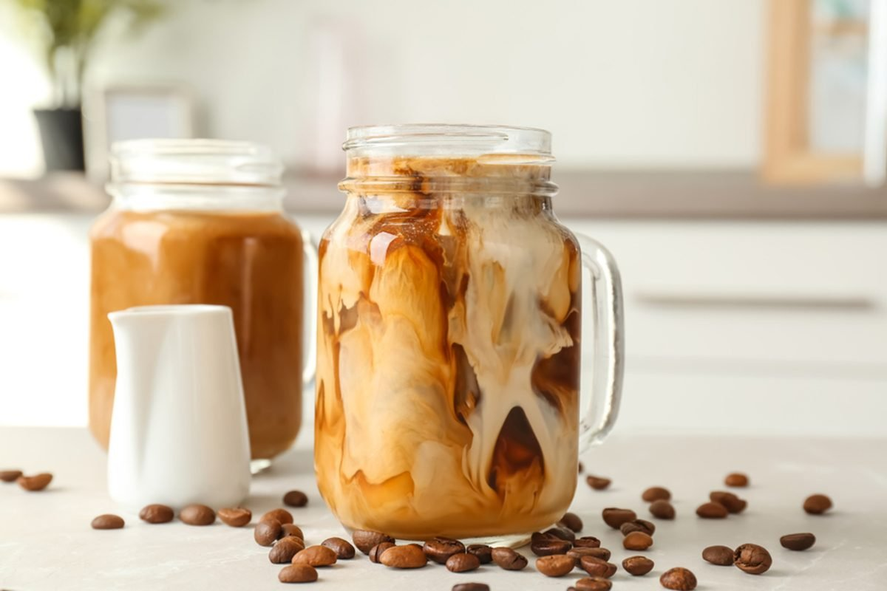

What Is Iced Coffee?
Quite simply, iced coffee is exactly what it sounds like: regularly brewed coffee served over ice. This method is quick—all you have to do is brew as normal (avoid these coffee brewing mistakes), cool it down and pour over ice. However, this method dilutes the coffee. To prevent the ice from watering your cold cuppa down, make your iced coffee extra strong by doubling the amount of ground coffee you put in your coffee maker. Another way to double up on the flavor is to make coffee ice cubes. Pour cooled coffee into an ice cube tray, freeze and use for your next cup of iced coffee.

What is Cold Brew Coffee?
Making cold brew isn’t as straightforward as simple iced coffee. What makes cold brew coffee so tasty is time. To make cold brew, coarse-ground coffee is steeped in cold water for at least twelve hours. The longer the coffee sits, the stronger the flavor. Since it tends to be stronger, serving cold brew with ice is A-OK.
Once it’s done steeping, the grounds are filtered out, leaving you with a coffee-concentrate that can be mixed with milk or water and served over ice. Because cold brew uses time instead of heat to extract the coffee’s oils, sugars and caffeine, the end result is generally less acidic and bitter than iced coffee.
If you’re short on time, you can use purchase a pre-made option from the grocery store. Here are our favorite cold brew coffee brands.

Did you know there's a difference between these two caffeinated faves? Check out the difference between cold brew vs. iced coffee.
While some may consider iced coffee to be a summertime drink, we’re a firm believer that its acceptable to drink this cool, caffeinated beverage year-round. But when you get to one of your favorite coffee shops, you’re presented with two options: cold brew vs. iced coffee. Both are cold, both come with ice—so what’s the difference?
Well, the big difference is how they’re made. Get the scoop on each type of coffee to find your preference.

The History of Coffee
Coffee grown worldwide can trace its heritage back centuries to the ancient coffee forests on the Ethiopian plateau. There, legend says the goat herder Kaldi first discovered the potential of these beloved beans.
The story goes that that Kaldi discovered coffee after he noticed that after eating the berries from a certain tree, his goats became so energetic that they did not want to sleep at night.
Kaldi reported his findings to the abbot of the local monastery, who made a drink with the berries and found that it kept him alert through the long hours of evening prayer. The abbot shared his discovery with the other monks at the monastery, and knowledge of the energizing berries began to spread.
As word moved east and coffee reached the Arabian peninsula, it began a journey which would bring these beans across the globe.